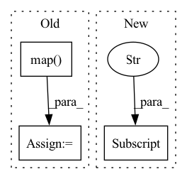

Pattern ID :18725
Before Change
new_col_name = node + "_idx"
col_map[node] = new_col_name
// add new Idx to dataframe
df[new_col_name] = df[config["node_columns"][i]].map( mapping[key])
if not heterogeneous:
offset = len(mapping[key])
print("Tokenize column map:", col_map)
return mapping, col_mapAfter Change
// key in dict: node + "_2idx" stores a unique mapping from real id -> indexed id mapping
// column new_col_name: node + "_idx" stores the indexed id
col_map = {}
node_types = config["node_types"]
node_type_columns = get_node_type_columns(config["node_columns"])
for i, node in enumerate(node_types):
key = str(node + "_2idx")
columns = node_type_columns[node]In pattern: SUPERPATTERN
Frequency: 4
Non-data size: 3
Instances Fragment ID: 60922709
Project Name: oap-project/cloudtik
Commit Name: 71c226134f43b1edac83fbb548a65c52cfae2304
Time: 2023-06-28
Author: haifeng.chen@intel.com
File Name: python/cloudtik/runtime/ai/modeling/graph_modeling/graph_sage/modeling/tokenizer.py
M Class Name: AnonimousClass
N Class Name: AnonimousClass
M Method Name: tokenize_node_ids(3)
N Method Name: tokenize_node_ids(3)
M Parent Class:
N Parent Class:
M File Name: python/cloudtik/runtime/ai/modeling/graph_modeling/graph_sage/modeling/tokenizer.py
N File Name: python/cloudtik/runtime/ai/modeling/graph_modeling/graph_sage/modeling/tokenizer.py
M Start Line: 35
M End Line: 41
N Start Line: 84
N End Line: 90
Before Change
)
else:
train_dataset = datasets.load_dataset(data_args.dataset_name, "queries")["train"]
train_dataset = train_dataset.map(
TrainProcessor(tokenizer),
batched=False,
num_proc=12,
remove_columns=train_dataset.column_names,
desc="Running tokenizer on train dataset",
)
train_dataset = TrainDataset(data_args, train_dataset, tokenizer)
else:
train_dataset = None
After Change
encode_dataset.encode_data = encode_dataset.encode_data\
.shard(data_args.encode_num_shard, data_args.encode_shard_index)
else:
encode_dataset = datasets.load_dataset(data_args.dataset_name, data_args.dataset_split)["train"] \
.shard(data_args.encode_num_shard, data_args.encode_shard_index)
encode_dataset = encode_dataset.map(
PROCESSOR_INFO[data_args.dataset_name][data_args.dataset_split](tokenizer),
Fragment ID: 60922710
Project Name: texttron/tevatron
Commit Name: cf0234cee7ad2a0ba472d040d82989cdcbc5a30c
Time: 2021-09-10
Author: x93ma@edu.uwaterloo.ca
File Name: examples/wikipedia-nq/run.py
M Class Name: AnonimousClass
N Class Name: AnonimousClass
M Method Name: main(0)
N Method Name: main(0)
M Parent Class:
N Parent Class:
M File Name: examples/wikipedia-nq/run.py
N File Name: examples/wikipedia-nq/run.py
M Start Line: 74
M End Line: 148
N Start Line: 74
N End Line: 147
Before Change
def f(xs):
return _pad_reshape_batch(_add_mask(xs, 1), flat_batch_size, num_devices)
ds = ds.map( f, num_parallel_calls=tf.data.AUTOTUNE)
if cache == "batched":
ds = ds.cache()
After Change
// `batch_size_per_device*num_devices - 1` additional examples).
padding_example = tf.nest.map_structure(
lambda spec: tf.zeros(spec.shape, spec.dtype)[None], ds.element_spec)
padding_example["mask"] = [0.]
padding_dataset = tf.data.Dataset.from_tensor_slices(padding_example)
ds = ds.concatenate(
padding_dataset.repeat(batch_size_per_device * num_devices - 1)) Fragment ID: 60922714
Project Name: google/uncertainty-baselines
Commit Name: 5ef136b370a87f81dc0d0f1f57757d0432b2bc6a
Time: 2022-05-17
Author: dusenberrymw@google.com
File Name: baselines/jft/input_utils.py
M Class Name: AnonimousClass
N Class Name: AnonimousClass
M Method Name: get_data(15)
N Method Name: get_data(15)
M Parent Class:
N Parent Class:
M File Name: baselines/jft/input_utils.py
N File Name: baselines/jft/input_utils.py
M Start Line: 291
M End Line: 344
N Start Line: 267
N End Line: 324
Before Change
)
else:
train_dataset = datasets.load_dataset(data_args.dataset_name, "queries")["train"]
train_dataset = train_dataset.map(
TrainProcessor(tokenizer),
batched=False,
num_proc=12,
remove_columns=train_dataset.column_names,
desc="Running tokenizer on train dataset",
)
train_dataset = TrainDataset(data_args, train_dataset, tokenizer)
else:
train_dataset = None
After Change
encode_dataset.encode_data = encode_dataset.encode_data\
.shard(data_args.encode_num_shard, data_args.encode_shard_index)
else:
encode_dataset = datasets.load_dataset(data_args.dataset_name, data_args.dataset_split)["train"] \
.shard(data_args.encode_num_shard, data_args.encode_shard_index)
encode_dataset = encode_dataset.map(
PROCESSOR_INFO[data_args.dataset_name][data_args.dataset_split](tokenizer),
Fragment ID: 60922718
Project Name: texttron/tevatron
Commit Name: 415cce1b92441afb3215dafcc4e7ad3b85d5a26a
Time: 2021-09-09
Author: x93ma@edu.uwaterloo.ca
File Name: examples/wikipedia-nq/run.py
M Class Name: AnonimousClass
N Class Name: AnonimousClass
M Method Name: main(0)
N Method Name: main(0)
M Parent Class:
N Parent Class:
M File Name: examples/wikipedia-nq/run.py
N File Name: examples/wikipedia-nq/run.py
M Start Line: 74
M End Line: 148
N Start Line: 74
N End Line: 147